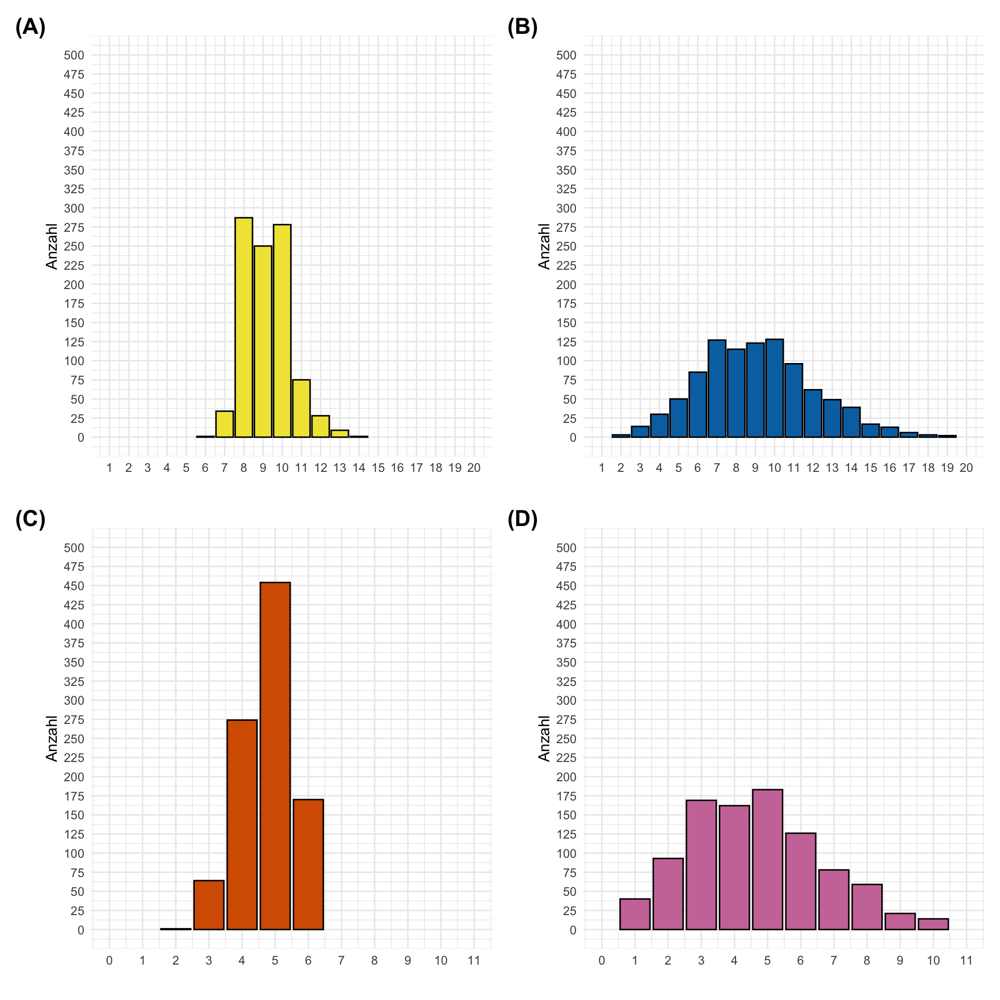
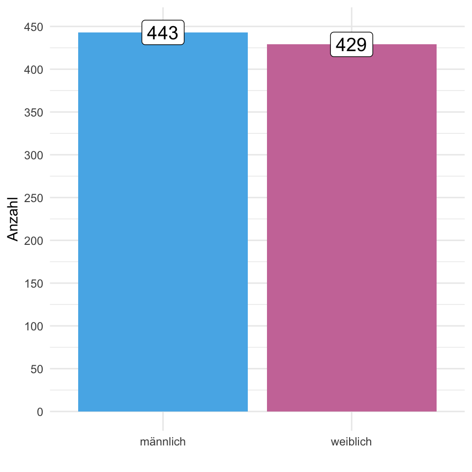

18 Verteilung von Daten
Version vom März 07, 2023 um 09:45:41
Wir besuchen gerne die R Shiny App The distribution zoo um mehr über die verschiedenen Verteilungen und deren Parameter zu erfahren.
In diesem Kapitel wollen wir uns mit Verteilungen beschäftigen. Dormann (2013) liefert eine weitreichende Übersicht über verschiedene Verteilungen. Natürlich ist diese Übersicht auch nicht abschließend. Es gibt eine sehr große Anzahl an Verteilungen, aber wir werden uns nur mit einer kleinen Auswahl beschäftigen. Die folgenden Verteilungen haben eine praktische Verwendung in der Data Science. Wir wollen uns in diesem Kapitel mit folgenden Verteilungen beginnen.
- der Normalverteilung, die Glockenkurve oder auch Gaussian im englischen Sprachgebrauch genannt, die kontinuierliche Zahlen repräsentiert.
- die Standardnormalverteilung, als eine spezielle Form der Normalverteilung mit einer Fläche von Eins unter der Kurve.
- die t-Verteilung, eine abgeleitete Verteilung von der Standardnormalverteilung, die ähnliche Eigenschaften wie die Standardnormalverteilung hat.
- der Poissonverteilung, die diskrete Zähldaten repräsentiert.
- die Binomialverteilung, die \(0/1\) Zahlen und damit das Eintreten eines Ereignisses repräsentiert. Bekannt aus den Würfel und Münzwurfbeispielen.
- die Uniformverteilung, eine Sockelverteilung, die über einen Zahlenrum nur einen Wert annimmt.
Wir wollen uns jetzt die verschiedenen Verteilungen einmal in der Anwendung anschauen. Dabei lassen wir viel Mathematik recht und links liegen. Du kannst bei Dormann (2013) mehr zu dem Thema statistische Verteilungen anlesen. Dort gibt es auch nochmal mehr Informationen zu den einzelnen Eigenschaften, die eine Verteilung noch so haben kann. Wir konzentrieren uns hier auf die Lageparameter und die Streuung der Verteilungen.

Wir halten den mathematischen Teil zu den Verteilungen sehr kurz oder überspringen den Teil ganz. Wir brauchen die Idee der Verteilungen, weil wir später den Methoden sagen müssen wie unser Outcome \(y\) verteilt ist. Nur dann können wir die Daten richtig auswerten.
In diesem Kapitel geht es erstmal um das Grundverständnis, das Daten einer Verteilung folgen. Oder noch konkreter, dass unser Outcome \(y\) einer Verteilung folgt. Wir müssen später unseren Alogrithmen sagen, welcher Verteilung \(y\) entspringt, sonst können wir keine korrekte Analyse unser Daten rechnen.
18.1 Genutzte R Pakete für das Kapitel
Wir wollen folgende R Pakete in diesem Kapitel nutzen.
pacman::p_load(tidyverse, magrittr, see, readxl)Am Ende des Kapitels findest du nochmal den gesamten R Code in einem Rutsch zum selber durchführen oder aber kopieren.
18.2 Daten für Verteilungen
Damit wir uns auch eine Verteilung anschauen können bruachen wir viele Beobachtungen. Wir haben das ja schon bei den Histogrammen gesehen, wenn wir ein aussagekräftiges Histogramm erstellen wollen, dann brauchen wir mehr als zwanzig Beobachtungen. Daher nehmen wir für dieses Kapitel einmal den Gummibärchendatensatz und schauen uns dort die Variablen gender, height, count_bears und count_color einmal genauer an. Wie immer nutzen wir die Funktion select() um die Spalten zu selektieren. Abschließend verwandeln wir das Geschlecht gender und das module noch in einen Faktor.
gummi_tbl <- read_excel("data/gummibears.xlsx") %>%
select(year, module, gender, height, count_bears, count_color,
most_liked) %>%
mutate(gender = as_factor(gender),
module = as_factor(module))Wir erhalten das Objekt gummi_tbl mit dem Datensatz in Tabelle 18.1 nochmal dargestellt. Wir brauchen nicht alle Spalten aus dem ursprünglichen Datensatz und somit ist die Tabelle etwas übersichtlicher.
| year | module | gender | height | count_bears | count_color | most_liked |
|---|---|---|---|---|---|---|
| 2018 | FU Berlin | m | 193 | 9 | 3 | lightred |
| 2018 | FU Berlin | w | 159 | 10 | 5 | yellow |
| 2018 | FU Berlin | w | 159 | 9 | 6 | white |
| 2018 | FU Berlin | w | 180 | 10 | 5 | white |
| 2018 | FU Berlin | m | 180 | 10 | 6 | white |
| 2018 | FU Berlin | m | NA | 10 | 5 | white |
| … | … | … | … | … | … | … |
| 2023 | Biostatistik | m | 175 | 10 | 6 | lightred |
| 2023 | Biostatistik | w | 162 | 11 | 5 | white |
| 2023 | Biostatistik | m | 180 | 9 | 4 | darkred |
| 2023 | Biostatistik | m | 187 | 11 | 5 | darkred |
| 2023 | Biostatistik | m | 194 | 10 | 5 | orange |
| 2023 | Biostatistik | m | 180 | 10 | 5 | darkred |
18.3 Die Normalverteilung
family = gaussian, wenn wir sagen wollen, dass unsere Daten einer Normalverteilung entstammen.Wenn wir von de Normalverteilung sprechen, dann schreiben wir ein \(\mathcal{N}\) Symbol - also ein großes N mit Serifen. Die Normalverteilung sieht aus wie eine Glocke, deshalb wird die Normalverteilung auch Glockenkurve genannt. Im englischen Sprachgebrauch und auch in R nutzen wir dagegen die Bezeichnung nach dem “Entdecker” der Normalverteilung, Carl Friedrich Gauß (1777 - 1985). Wir nennen daher die Normalverteilung auch Gaussian-Verteilung.
Eine Normalverteilung wird ruch zwei Verteilungsparameter definiert. Eine Verteilung hat Parameter. Parameter sind die Eigenschaften einer Verteilung, die notwendig sind um eine Verteilung vollständig zu beschreiben. Im Falle der Normalverteilung brauchen wir zum einen den Mittelwert \(\bar{y}\), der den höchsten Punkt unserer Glockenkurve beschreibt. Zum anderen brauchen wir auch die Standardabweichung \(s^2_y\), die die Ausbreitung oder Breite der Glockenkurve bestimmt. Wir beschreiben eine Normalverteilung für eine Stichprobe mit \(\bar{y}\) und \(s^2_y\) wie folgt.
\[ \mathcal{N}(\bar{y}, s^2_y) \]
Oder mit mehr Details in folgender Form. Wir können hier Verallgemeinern und schreiben in der Grundgesamtheit mit \(\mu = \bar{y}\) und \(\sigma^2 = s^2_y\). Das heißt, wenn wir unendlich viele Beobachtungen vorliegen hätten, dann wüssetn wir auch den wahren Mittelwert \(\mu\) und die wahre Varianz \(\sigma^2\) der Daten.
\[ f(y \mid\mu,\sigma^2)=\cfrac{1}{\sqrt{2\pi\sigma^2}} e^{-\cfrac{(y-\mu)^2}{2\sigma^2}}\quad -\infty<y<\infty \]
Im Falle der Normalverteilung brauchen wir einen Paramter für den höchsten Punkt der Kurve, sowie einen Parameter für die Ausbreitung, also wie weit geht die Kurve nach links und nach rechts. Je nach \(\bar{y}\) und \(s^2_y\) können wir verschiedenste Normalverteilungen vorliegen haben. Eine Sammlung von Verteilungen nennen wir auch Familie (eng. family).
In Abbildung 18.1 sehen wir verschiedene Normalverteilungen mit unterschiedlichen Mittelwerten. In Abbildung 18.1 (a) sehen wir eine Varianzhomogenität vorliegen, da die Varianzen in allen drei Normalverteilungen gleich sind. Wir können auch schreiben, dass \(s^2_{1} = s^2_{2} = s^2_{3} = 2\). In Abbildung 18.1 (b) haben wir Varianzheterogenität vorliegen, da die Varianzen der Normalverteilungen ungleich sind. Wir können hier dann schreiben, dass \(s^2_{1} = 6 \neq s^2_{2} = 1 \neq s^2_{3} = 3\) sind. Häufig gehen statistische Verfahren davon aus, dass wir Varianzhomogenität über die Gruppen und daher auch die Normalverteilungen vorliegen haben. Konkret, wenn wir die Sprungweiten in[cm] von Hunde- und Katzenflöhen mit einander vergleichen wollen, dann gehen wir erstmal davon aus, dass die Mittelwerte verschieden sind, aber die Varianzen gleich sind.


Wenn wir eine Normalverteilung vorliegen haben, dann liegen 68% der Werte plus/minus einer Standardabweichung vom Mittelwert. Ebenso liegen 95% der Werte plus/minus zwei Standabweichungen vom Mittelwert. Über 99% der Werte befinden sich innerhalb von drei Standardabweichungen vom Mittelwert. Diese Eigenschaft einer Normalverteilung können wir später noch nutzen um abzuschätzen, ob wir einen relevanten Gruppenunterschied vorliegen haben oder aber ob unsere Daten unnatürlich breit streuen.
Schauen wir uns die Normalverteilung einmal am Beispiel unserer Gummibärchendaten und der Körpergröße der Studierenden an. Wir färben das Histogramm nach dem Geschlecht ein. In Abbildung 18.2 sehen wir das Ergebnis einmal als Histogramm und einmal als Densityplot dargestellt. Wir können annehmen, dass die Größe approximativ normalverteilt ist.


Wir können die Funktion rnorm() nutzen um uns zufällige Zahlen aus der Normalverteilung ziehen zu lassen. Dazu müssen wir mit n = spezifizieren wie viele Beobachtungen wir wollen und den Mittelwert mean = und die gewünschte Standardabweichung mit sd = angeben. Im Folgenden einmal ein Beispiel für die Nutzung der Funktion rnorm() mit zehn Werten.
Du kannst ja mal den Mittelwert und die Standardabweichung der zehn Zahlen ausrechnen. Da wir es hier mit einer Stichprobe mit zehn Beobachtungen zu tun haben, wird der Mittelwert \(\bar{y}\) und die Standardabweichung \(s_y\) sich von den vorher definierten Mittelwert \(\mu_y = 5\) und Standardabweichung \(\sigma_y = 2\) der Grundgesamtheit unterscheiden.
Wir können auch aus unseren Gummibärchendaten für die Körpergröße in [cm] jeweils den Mittelwert und die Standardabweichung getrennt für die Geschlechter berechnen und dann die theoretische Normalverteilung zeichenen. In Abbildung 18.3 (b) und Abbildung 18.3 (d) sehen wir die Verteilung der theoretischen Werte, wenn wir die Mittelwerte und die Standardabweichung aus den Verteilungen in Abbildung 18.3 (a) schätzen. Spannderweise bildet sich den zufällig gezogenen Daten auch eine leichte Schulter bei der Verteilung der Körpergrößen. Auch \(n = 503\) vollständige Beobachtungen bedeuten nicht, dass wir eine perfekte Normalverteilung erhalten.


18.4 Die Standardnormalverteilung
Es gibt viele Normalverteilungen. Eiegntlich gibt es unednlich viele Normalverteilunge, da wir für die Parameter Mittelwert \(\bar{y}\) und die Standardabweichung \(s_y\) beliebige Zahlen einsetzen können. Aber es gibt eine besondere Normalverteilung, so dass diese Verteilung einen eigenen Namen hat. Wir sprechen von der Standardnormalverteilung, wenn der Mittelwert gleich Null ist und die Standardabweichung gleich Eins. Du siehst hier nochmal die Standardnormalverteilung ausgeschrieben.
\[ \mathcal{N}(0, 1) \]
Folgende Eigenschaften sind der Standardnormalverteilung gegeben. Die Standardnormalverteilung hat eine Fläche von \(A = 1\) unter der Kurve. Darüber hinaus liegen 95% der Werte zwischen \(\approx -2\) und \(\approx 2\). Die einzelnen Werte einer Standardnormalverteilung nennen wir \(z\)-Werte. Wenn wir eine beliebige Normalverteilung in eine Standardnormalverteilung überführen wollen so machen wir die Umwandlung mit der \(z\)-Transformation. Und jetzt fahren wir wieder in die Doppeldeutigkeit in R.

In Abbildung 18.4 haben wir eine Standardnormalverteilung gegeben. Können jetzt verschiedene Werte auf der \(x\)-Achse und die Flächen links und rechts von diesen Werten berechnen. Wir nutzen die Funktion pnorm() wenn wir die Fläche rechts oder links von einem Wert \(q\) berechnen wollen.
Wir berechen die Fläche links von \(q\) und damit auch die Wahrscheinlichkeit \(Pr(X \leq q)\) mit lower.tail = TRUE. Warum ist die Fläche jetzt eine Wahrscheinlichkeit? Wir haben unter der Kurve der Standardnormalverteilung eine Fläche von \(A = 1\). Damit ist jede Fläche auch gleich einer Wahrscheinlichkeit. Wenn wir an der Fläche rechts von \(q\) interessiert sind und damit auch an der Wahrscheinlichkeit \(Pr(X > q)\) nutzen wir die Option lower.tail = FALSE. Das ist erstmal immer etwas verwirrend, aber schau dir den Zusammenhang nochmal in der Abbildung 18.4 an. Wir brauchen diese Idee von der Fläche ist auch gleich Wahrscheinlichkeit im Kapitel 20 zum statistischen Testen.
Wir können die Berechnung von \(q\) zu \(p\) auch umdrehen. Wir geben eine Fläche vor und wollen wissen wie der Wert auf der x-Achse zu der entsprechenden Fläche ist. In diesem Fall will ich die Werte zu den Flächen von \(p = 0.025\) und \(p = 0.05\). Da wir lower.tail = FALSE ausgewählt haben, sind wir auf der rechten Seite der Verteilung.
Und hier einmal als Gegenprobe mit der Option lower.tail = TRUE. Wir springen dann damit auf die linke Seite der Verteilung und wie zu erwarten erhlaten wir dann auch den negativen Wert für die Fläche von \(p = 0.05\).
Die ganzen Berechnungen funktionieren natürlich auch, wenn wir nicht die Fläche \(A=1\) unterhalb der Standardnormalverteilung hätten. Aber wir nutzen hier eben den Zusammenhang von Fläche zu Wahrscheinlichkeit um mit der Verteilung zu rechnen und Wahrscheinlichkeiten abzuschätzen.
18.5 Die t-Verteilung
Die t-Verteilung ist eine Abwandlung der Standardnormalverteilung. Wir haben wieder eine Fläche \(A = 1\) unter der Verteilungskurve. Wir benötigen die t-Verteilung, als eine künstliche Verteilung, im Kapitel 22 zum statistischen Testen mit dem t-Test. Wir bezeichnen die t-Verteilung als eine künstliche Verteilung, da wir in der Biologie nichts beobachten können, was t-verteilt ist. Wir nutzen die t-Verteilung nur im statistischen Kontext und in diesem Kontekt nur um uns klar zu machen wie statistisches Testen konzeptionell funktioniert. Anwenden werden wir die Verteilung nicht.
Der Unterschied ist die Form der t-Verteilung. Wir geben mit der Option df = die Freiheitsgrade der Verteilung an. Hier soll es reichen, dass mit \(\lim_{df \to \infty}\) sich die t-Verteilung der Standardnormalverteilung fast gleicht. Bei niedrigeren Freiheitsgraden ist die t-Verteilung nicht mehr so hoch und daher sind die Verteilungsenden weiter nach außen geschoben. Die t-Verteilung ist gestaucht wie wir in Abbildung 18.5 etwas überspitzt gezeichnet sehen. Die Freiheitsgrade hängen direkt an der beobachteten Fallzahl mit \(df = n_1 + n_2 - 2\).

Wie auch bei der Standardnormalverteilung gilt folgender Zusammenhang, wenn wir die Flächen anhand eines gegebenen t-Wertes berechnen wollen. Wenn wir die Fläche links von dem t-Wert berechnen wollen, also die Wahrscheinlichkeit \(Pr(X \leq t)\), dann nutzen wir die Option lower.tail = TRUE. Wenn wir die Fläche auf der rechten Seite von unserem t-Wert berechnen wollen, dann nutzen wir mit \(Pr(X > t)\) die Option lower.tail = FALSE. In der Funktion pt() ist das q= als t= zu lesen. Das macht das Verständnis vielleicht leichter.
Neben der Berechnung der Wahrscheinlichkeit rechts und links eines gegebenen Wertes \(t\) können wir auch \(t\) berechnen, wenn wir eine Fläche vorgeben. Das kann uns dann die Funktion qt() liefern. Wir sehen, dass mit steigender Fallzahl und damit steigenden Freiheitsgrad sich der berechnete Wert sich dem Wert der Standardnormalverteilung von \(1.96\) für \(p = 0.05\) annähert.
[1] 2.571 2.228 2.086 1.984 1.962Wir haben gelernt, dass der Zusammenhang zwischen der Standardnormalverteilung und der t-Verteilung ziemlich stark ist. Nutzen werden wir die t-Verteilung aber nur im Rahmen des statistischen Testens.
18.6 Die Poissonverteilung
Eine weitere wichtige Verteilung ist die Poissonverteilung. Die Poissonverteilung ist eine diskrete Verteilung. Daher kommen nur ganze Zahlen vor. Damit bildet die Poissonverteilung die Zähldaten ab. Wenn wir also etwas Zählen, dann ist diese Variable mit den gezählten Ergebnissen poissonverteilt. Im Folgenden sehen wir die Poissonverteilung einmal dargestellt.
\[ \mathcal{Pois}(\lambda) \]
Oder mit mehr Details in folgender Form.
\[ P_\lambda (k) = \frac{\lambda^k}{k!}\, \mathrm{e}^{-\lambda} \]
Die Poisson-Verteilung gibt dann die Wahrscheinlichkeit einer bestimmten Ereignisanzahl \(k\) im Einzelfall an, wenn die mittlere Ereignisrate \(\lambda\) bekannt ist. Im Gegensatz zur Normalverteilung hat die Poissonverteilung nur einen Parameter. Den Lageparameter \(\lambda\) ausgedrückt durch den griechischen Buchstaben Lambda. Eine Poissonverteilung mit \(\mathcal{Pois}(4)\) hat den höchsten Punkt bei vier. Nun hat die Poissonverteilung hat mehrere Besonderheiten. Da die Poissonverteilung keinen Streuungsparameter hat, steigt mit dem \(\lambda\) auch die Streuung. Daher haben Poissonverteilungen mit einem großen \(\lambda\) auch eine große Streuung. ie Ausbreitung der Kurve ist eine Funktion von \(\lambda\) und steigt mit \(\lambda\) an. Du kannst diesen Zusammenhang in Abbildung 18.6 beobachten.
Darüber hinaus kann eine Poissonverteilung nicht negativ werden. Es kann keine kleinere Zahl als die Null geben. Durch die diskreten Zahlen haben wir auch immer mal Lücken zwischen den Balken der Poissonverteilung. Das passiert besonders, wenn wir eine kleine Anzahl an Beobachtungen haben. Abschließend konvergiert die Poissonverteilung bei großen \(\lambda\) hin zu einer Normalverteilung.

Schauen wir uns nun einmal die Poissonverteilung im Beispiel an. In Abbildung 18.7 sehen wir die Histogramme der Anzahl an Gummibärchen in einer Tüte und die Anzahl an Farben in einer Tüte. Da wir es hier mit Zähldaten zu tun haben, könnte es sich um eine Poissonverteilung handeln. Wie müssen uns nun die Frage stellen, ob die Gummibärchen in einer Tüte und die Anzahl an Farben in einer Tüte wirklich eine zufällige Realistierung sind. Daher eine zufällige Stichprobe der Grundgesamtheit. Wir können diese Annahme überprüfen in dem wir die theoretischen Werte für die beiden Poissonverteilung mit \(\mathcal{Pois}(10)\) und \(\mathcal{Pois}(5)\) genieren.


Wir können die Funktion rpois() nutzen um uns zufällige Zahlen aus der Poissonverteilung ziehen zu lassen. Dazu müssen wir mit n = spezifizieren wie viele Beobachtungen wir wollen und den Mittelwert lambda = angeben. Im Folgenden einmal ein Beispiel für die Nutzung der Funktion rpois() mit zehn Werten.
rpois(n = 10, lambda = 5) [1] 3 5 4 5 3 3 9 3 5 5Wir können nun auch aus unseren Gummibärchendaten für die Anzahl an Bärchen in einer Tüte sowie die Anzahl an Farben in einer Tüte die theoretische Poissonverteilung berechnen. In Abbildung 18.8 sehen wir die Verteilung der beobachteten Werte für Anzahl an Bärchen in einer Tüte sowie die Anzahl an Farben in einer Tüte und deren theoretischen Verteilung nach dem geschätzen \(\lambda = 10\) und \(\lambda = 5\). Wir sehen ganz klar, dass die beide Variablen keine Zufallsrealisierung sind. Zum einen haben wir das auch nicht erwartet, es gibt nicht mehr als sechs Farben und zum anderen ist zu vermuten, dass Haribo technisch in den Auswahlprozess eingreift. Wir haben auf jeden Fall eine sehr viel kleinere Streuung als bei einer klassischen Poissonverteilung anzunehmen wäre.



In Abbildung 18.9 schauen wir uns nochmal an in wie weit sich die Füllung der Tütchen im Laufe der Jahre entwickelt hat. Die Daten werden ja schon seit 2018 erhoben. Wir schauen uns daher die Densityplot einmal aufgetrennt für die Jahre 2018 bis heute an. Das Jahr 2020 fehlt, da bedingt durch die Coronapandemie keine Präsenslehre stattfand. Wir sehen, dass sich die Verteilung anscheinend in dem Jahr 2022 langsam nach links zu weniger Bärchen in einer Tüte bewegt. Wir bleiben gespannt auf den weiteren Trend.

In Abbildung 18.10 betrachten wir die Verteilung der am meisten gemochten Gummibärchen aufgeteilt nach dem angegebenen Geschlecht im Vergeich zu den Gummibärchen in den Tütchen. Wir sehen, dass Haribo die Tütchen sehr gleichmäßig verteilt und auf die Geschmäcker keinerlei Rücksicht nimmt. Entweder weiß Haribo nichts von den Vorlieben seiner Käufer:innen oder aber es ist dann doch zu viel Aufwand die Produktion anzupassen.


18.7 Die Binominalverteilung
Die Binomialverteilung wird uns vor allem später in den logistischen Regression wieder begegnen. An dieser Stelle ist es wichtig zu wissen, dass wir es bei der Binomialverteilung mit binären Ereignissen zu tun haben. Wir haben nur Erfolg oder nicht. Daher haben wir nur das Ergebnis \(0/1\) daher Null oder Eins. Dieses Ergebnis ist im Prinzip auch die Beschreibung eines Patienten, ob dieser krank oder nicht krank ist. Deshalb finden wir die Binomialverteilung auch häufig in einem medizinischen Kontext.
Es gibt auch ein schönes Tutorial zur Binomial Distribution von David Arnold.
Schauen wir uns die Formel für die Binomialverteilung einmal genauer an. Wichtig ist, dass wir etwas \(n\)-mal wiederholen und uns dann fragen, wie exakt \(k\)-oft haben wir Erfolg.
\[ B(k\mid p,n)= \begin{cases} \binom nk p^k (1-p)^{n-k} &\text{falls} \quad k\in\left\{0,1,\dots,n\right\}\\ 0 & \text{sonst.} \end{cases} \]
mit
- \(n\) gleich der Anzahl an Versuchen (eng. trails)
- \(k\) gleich der Anzahl an Erfolgen
- \(p\) gleich der Wahrscheinlichkeit für einen Erfolg.
Bevor wir mit dem Beispiel beginnen können brauchen wir noch etwas mehr für die Berechnung der Formel. Wir brauchen noch für die Berechnung der Binomalverteilung den Binomialkoeffizienten \(\tbinom {n}{k}\), den wir wie folgt bestimmen können. Dabei bedeutet das \(!\), dass wir eine Zahl aufmultiplizieren. Daher müssen wir für \(4!\) dann wie folgt rechnen \(4! = 1 \cdot 2 \cdot 3 \cdot 4 = 24\).
\[ \binom nk = \cfrac{n!}{k! \cdot (n-k)!} \]
Nehmen wir dafür einmal ein Beispiel mit 5 über 3 und schauen uns die Rechnung einmal an. Wir erhalten den Binomialkoeffizienten \(\tbinom {5}{3}\) wie folgt.
\[ \binom 5 3 = \frac{5!}{3! \cdot (5-3)!} = \frac{5!}{3! \cdot 2!} = \frac{1\cdot 2\cdot 3\cdot 4\cdot 5}{(1\cdot 2\cdot 3) \cdot (1\cdot 2)} = \frac{4\cdot 5}{1\cdot 2} = 10 \]
Viele Taschenrechner können den Binomialkoeffizienten flott ausrechnen. Wenn wir keinen Taschenrechner haben, dann können wir auch das Pascalsche (oder Pascal’sche) Dreieck nutzen. Das Pascalsche Dreieck ist eine Form der grafischen Darstellung der Binomialkoeffizienten \(\tbinom {n}{k}\). Wir sehen einmal in Abbildung 18.11 den Zusammenhang mit dem Binomialkoeffizienten dargestellt. Mit dem Pascalsche Dreieck können wir auch ohne Taschenrechner den Binomialkoeffizienten bestimmen.

Somit können wir auch einmal ein erweitertes Beispiel der Binomialverteilung rechnen. Was ist die Wahrscheinlichkeit bei \(n = 5\) Münzwürfen genau dann \(k = 2\) Erfolge zu erzielen, wenn die Münze fair ist und damit gilt \(p = 0.5\)?
\[ \begin{aligned} Pr(Y = 3) &= \binom {5}{3} 0.5^{3} (1-0.5)^{5-3} \\ &= 10 \cdot 0.5^3 \cdot 0.5^2 \\ &= 0.31 \end{aligned} \]
Wir immer können wir die ganze Rechnung dann auch in R durchführen. Dank der Funktion choose() können wir schnell den Binomialkoeffizienten berechnen. Der Rest ist dann nur noch das Einsetzen.
choose(5,3) * 0.5^3 * 0.5^2[1] 0.3125Auch hier geht es natürlich auch in R noch einen Schritt schneller. Leider heißt dann wieder alles anders. Wir wollen x = k = 3 Erfolge aus size = n = 5 Versuchen mit einer Erfolgswahrscheinlichkeit von prob = 0.5. Daran muss man sich dann gewöhnen, dass sich die Begrifflichkeiten dann doch immer mal wieder ändern.
dbinom(x = 3, size = 5, prob = 0.5)[1] 0.3125Was wäre wenn wir jetzt die Wahrscheinlichkeit \(Pr(Y \leq 3)\) berechnen wollen? Also nicht exakt die Wahrscheinlichkeit für \(k=3\) Erfolge sondern eben \(k\) Erfolge oder weniger \(k \leq 3\). Dann müssen wir die Wahrscheinlichkeiten für \(Pr(Y = 0)\), \(Pr(Y = 1)\), \(Pr(Y = 2 )\) und \(Pr(Y = 3)\) berechnen und diese Wahrscheinlichkeiten aufaddieren.
Oder wir rechen einfach die Fläche und damit die Wahrscheinlichkeit links von \(k = 3\) aus. Dafür haben wir dann die Funktion pbinom(). Es geht dann eben doch etwas flotter. Wie immer können wir dann über die Option lower.tail = entscheiden, auf welche Seite der Verteilung wir schauen wollen.
pbinom(3, 5, 0.5, lower.tail = TRUE)[1] 0.8125Angenommen, eine Münze wird so gewichtet, dass sie in 60 % der Fälle Kopf ergibt. Wie hoch ist die Wahrscheinlichkeit, dass Sie nach 50 Würfen 25 oder mehr Köpfe erhalten? Dafür können wir dann auch die Funktion pbinom() einmal nutzen. Da wir mehr wollen, also “größer als”, müssen wir rechts von dem berechneten Wert schauen, also auswählen, dass lower.tail = FALSE ist.
pbinom(25, 50, 0.6, lower.tail = FALSE)[1] 0.9021926Zum Abschluss schauen wir nochmal in unseren Gummibärchendaten, wie dort ein Histogramm einer binären Variable mit nur zwei Ausprägungen aussehen würde. In Abbildung 18.12 sehen wir einmal das Geschlecht als Balkendiagramm dargestellt. Mehr gibt es zu diesem Diagramm erstmal nicht zu berichten. Bei einer Variable bei einem unbekannten \(p\) für eine der Kategorien, ist schwer etwas zu bewerten. Wir sehen aber, dass wir eine sehr schöne Gleichverteilung von den Geschlechtern in den Daten haben.

18.8 Die Uniformverteilung
Die Gleichverteilung oder Uniformverteilung brauchen wir in der Statistik eher selten. Da wir aber hin und wieder mal auf die Gleichverteilung in technischen Prozessen stoßen, wollen wir uns die Gleichverteilung nochmal anschauen. Wenn wir eine Gleichverteilung vorliegen haben, dann sind alle Kategorien gleich häufig vertreten. Es ergibt sich dann folgende Verteilung als Plateau. Das Eintreten jedes Ereignisses ist gleich wahrscheinlich.
\[ f(y)= \begin{cases} \cfrac 1{b-a} & a \le y \le b\\ 0 & \text{sonst.} \end{cases} \]

Da gibt es auch sonst wenig mehr zu berichten. Nehmen wir daher nochmal ein technisches Beispiel aus unseren Gummibärchendaten. Wir würden je Farbe 838 Gummibärchen erwarten. Warum ist das so? Wir haben insgesamt 5029 ausgezählt. Wenn jede der sechs Kategorien mit der gleichen Wahrscheinlichkeit auftritt, dann erwarten wir jeweils \(1/6\) von der Gesamtzahl. Wir erkennen, dass wir etwas zu wenig grüne Bärchen haben. Ebenso sind die hellroten Bärchen unterrepräsentiert. Dafür haben wir dann zwangsweise etwas mehr an gelben und orangen Gummibärchen. Dennoch würde ich hier von einer Gleichverteilung ausgehen.


18.9 Weitere Verteilungen
Wir besuchen gerne die R Shiny App The distribution zoo um mehr über die verschiedenen Verteilungen und deren Parameter zu erfahren.
Weitere Beispiele finden sich unter Basic Probability Distributions in R. Im Weiteren liefert Dormann (2013) eine gute Übersicht über verschiedene Verteilungen und deren Repräsentation in R. Das ist nur eine Auswahl an möglichen Verteilungen. Bitte hier nicht ins rabbit hole der Verteilungen gehen. Wir benötigen in unserer täglichen Arbeit nur einen kleinen Teil der Verteilungen. Es reicht, wenn du eine Vorstellungen der Verteilungen in diesem Kapitel hat.